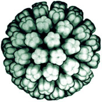

{kind=link}
{kind=link}
Home
My name is Stephan and I
used to be (from 1997-1999) a Fogarty visiting fellow, part of the NIH intramural research program, at the
NIH in Bethesda MD, U.S.A. I
worked in the Laboratory of Molecular Medicine an Neuroscience (LMMN) in the National Institude of Neurological Disorders and
Stroke (NINDS). My special scientific interests during that
time focused on virology and neuroscience. My major project at that time was arranged around the regulation of
the human polyomavirus JC
Virus (JCV) .
At this time I am working at the norwegian National Hospital
(Rikshospitalet) in the Microbiology section.
From 1993 to 1997 I was a member of the Graduiertenkolleg "Molekularbiologische Analyse pathophysiologischer Prozesse" (GK60) at the Georg-August-Universität Göttingen (University of Göttingen) in Göttingen.
During the time in the
U.S.A. I set up my first web pages and many of this pages are direct offsprings of the original pages. Due to
that some parts my be odd or simply old.
My first language is German, so you may also find some pages written in German or even parts in Norwegian (as
this will become my third major language).
In my spare time I
exchange the lab bench with the kitchen range or surf through the internet looking for interesting software,
mostly shareware and freeware. I'm especially searching for science related software which makes the work in the
lab a little bit easier. This for example includes sequence analysing software, picture analysis software and
data presentation software. I show some links to scientific software which is (or used to be) sometimes hard to
find on the net on my Tips pages.
In addition I want to give you a list of software which is not specifically science related but useful for every
interested user.
Due to my general interest in computers I developed a good contact with the people at the NINDS computer facility
(RSB) who taught me a lot in how to set up and optimize a PC running WinDOZ
95. Therefor I want to thank all of them, especially Brad J. Zoltick.
Seite erstellt am 14.Oktober 2002
Seite zuletzt bearbeitet am 23.03.2012